← Index · ← Previous · Next →
Authors: Carla Cotea, Stefan Balauca, Andreea Arusoaie
Type: both · Category: quantum information and computing · PDF: https://arxiv.org/pdf/2610.10254v1
Analysis basis: full PDF text, analyzed in chunks
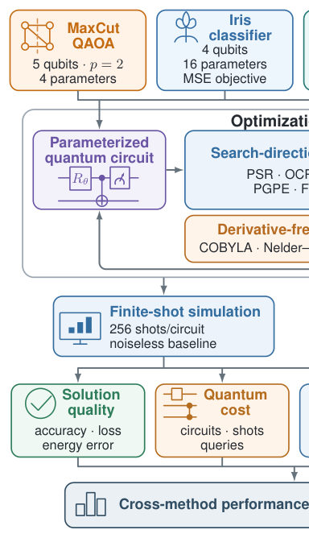
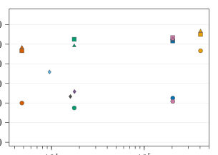
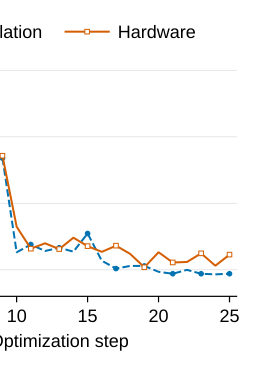
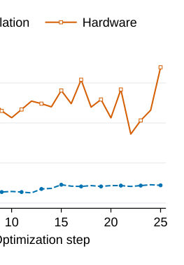
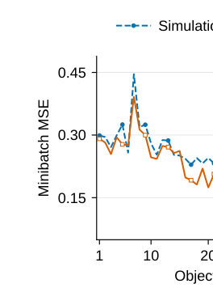
Summary. This paper introduces a modular benchmarking framework to systematically test optimization strategies for parameterized quantum circuits. By decoupling gradient estimation from parameter updates, the authors evaluate performance across diverse tasks like chemistry and machine learning. The work is vital for understanding how resource constraints and algorithmic choices affect practical quantum computation.
Why it may be interesting. It provides a rigorous, resource-aware framework for comparing optimization algorithms in the NISQ era, which is crucial for developing practical quantum machine learning and simulation protocols.
Main problem. Training parameterized quantum circuits (PQCs) is challenging due to the need to balance optimization progress against limited evaluation budgets and the inherent statistical uncertainty of near-term quantum hardware.
Main result. The study benchmarks various optimization strategies, showing that performance is highly dependent on the specific workload, resource constraints, and the modular separation of gradient estimation from parameter updates.
Method. The authors developed a modular benchmarking framework that independently evaluates quantum search-direction estimators (e.g., OCP, finite-difference) and classical parameter-update rules (e.g., Adam, SGD).
Model / system. The benchmarking is applied across four distinct quantum workloads: QAOA for MaxCut, QCNN for Iris/MNIST classification, and VQE for molecular hydrogen ($ ext{H}_2$).
Key observables. Solution quality (e.g., Test Accuracy, Energy Error), and resource costs (Objective Evaluations, Logical Circuits, Shots).
Important parameters / regimes. Finite-shot simulation (256 shots/circuit), 156-qubit processor, and various hyperparameter settings for optimizers.
Assumptions / limitations. The hardware runs are presented as targeted case studies and do not establish a universal optimizer ranking or isolate the causal effect of device noise.
Figures summary. Figures provide an overview of the modular optimization loop across the four workloads, comparing solution quality against quantum-evaluation cost.
Paper structure. The paper reviews background, defines component-level comparisons, details the specific workloads/protocols, presents results comparing various optimizers, and concludes with a discussion of limitations.
Training parameterized quantum circuits requires balancing optimization progress with limited evaluation budgets and the statistical uncertainty of near-term quantum hardware. We present a modular benchmarking framework that separates quantum search-direction estimation from classical parameter-update rules, allowing their interactions and sensitivities to be examined independently. We evaluate a suite of gradient-based, stochastic, and derivative-free optimizers across combinatorial optimization using the Quantum Approximate Optimization Algorithm (QAOA), supervised quantum machine learning using Iris classification and a quantum convolutional neural network (QCNN) for binary MNIST classification, and quantum chemistry using the variational quantum eigensolver (VQE) for molecular hydrogen. By separating objective evaluations from sample-circuit costs under finite-shot simulation and physical execution on a 156-qubit processor, we compare optimizer behavior across workloads with different parameter counts and measurement requirements. Four selected simulator and hardware case studies report terminal and best observed objectives separately, alongside post-training classifier accuracies. The comparisons include selected MaxCut and hydrogen trajectories and illustrate workload-dependent objective changes and evaluation costs, while the simulator benchmark compares both peak and mean performance across three seeds. The hardware runs do not establish an optimizer ranking or isolate a causal effect of device noise.
Authors: Bohan Lu, Kenneth R. Brown
Type: theory · Category: quantum information and computing · PDF: https://arxiv.org/pdf/2610.09341v1
Analysis basis: full PDF text, analyzed in chunks
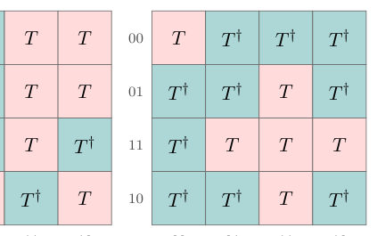
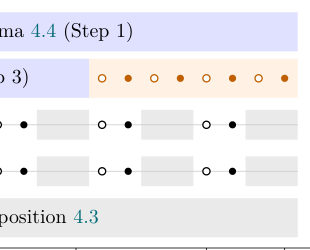
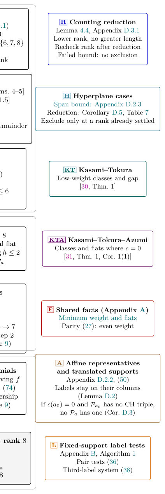
Summary. This paper develops a method to construct quantum error-correcting codes capable of implementing a non-Clifford CCZ gate using physical T/T⁽ gates. By combining projective geometry with SAT solving, the authors build codes of increasing length while proving a lower bound on the minimum required code length. This advances the theoretical understanding of fault-tolerant quantum computation.
Why it may be interesting. This work directly addresses the feasibility of implementing universal quantum gates (like CCZ) in fault-tolerant quantum computation using specific hardware constraints (transversal gates), which is central to quantum computing theory.
Main problem. The paper focuses on constructing Calderbank-Shor-Steane (CSS) quantum error-correcting codes that can implement a non-Clifford logical CCZ gate using transversal physical T/T⁽ gates.
Main result. The authors successfully construct such codes for various block lengths (e.g., $n=48$ to $n=496$) and prove that no such code exists for lengths below $n=39$.
Method. The construction combines projective geometry to define the stabilizer structure, uses the constraints imposed by the target CCZ gate (leading to Campbell-Howard conditions), and solves the resulting compatibility search as a Boolean Satisfiability (SAT) problem.
Model / system. The model is quantum error correction using CSS codes, where the logical operations are realized via transversal physical T/T⁽ gates. The underlying mathematical structure is defined using binary projective geometry $ ext{PG}(s-1, 2)$.
Key observables. Code distance parameters ($d_X, d_Z$), the weight of codewords, and the existence of a compatible logical operator.
Important parameters / regimes. Block length $n$ (tested from 48 to 496, with a gap $39 \le n \le 46$ remaining open), and the required distance $d_Z \ge 3$.
Assumptions / limitations. The primary assumption is that the code structure can be derived from projective geometry, and the search for compatible operators is encoded as a SAT problem.
Figures summary. The notes do not provide a summary of figures, but mention references to equations (6), (10), and a general proof structure for Theorem 4.5.
Paper structure. The paper proceeds by first defining the problem using projective geometry to establish $d_Z \ge 3$. It then translates the physical constraints into algebraic conditions (CH conditions), which are solved using SAT solvers to find compatible codes. Finally, it systematically proves non-existence for small lengths ($n < 39$) through exhaustive algebraic exclusion.
We construct CSS codes with three logical qubits whose logical CCZ gate is implemented by transversal physical $T/T^{\dagger}$ gates and whose distance is at least $3$. These codes start with $8$-divisible $X$-stabilizers defined by projective geometry, which guarantees $d_Z\geq 3$. A SAT solver then finds three $X$-logical operators compatible with the transversal CCZ. We build codes at thirteen block lengths from $n=48$ to $n=496$, with $d_Z=3$ or $4$, and illustrate the method with the $[[48,3,3]]$ code $Q_{48}$. Additionally, we prove that no CSS code with three logical qubits, $Z$-distance at least $3$, and a quasi-transversal CCZ gate (transversal $T$ with a diagonal Clifford correction) exists below $n=39$. The $[[47,3,3]]$ code of Jacinto et al. serves as an upper bound, leaving $39\leq n\leq46$ open.
Authors: Animesh Shaw
Type: theory · Category: other · PDF: https://arxiv.org/pdf/2610.09029v1
Analysis basis: full PDF text, analyzed in chunks
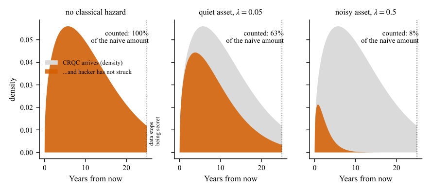
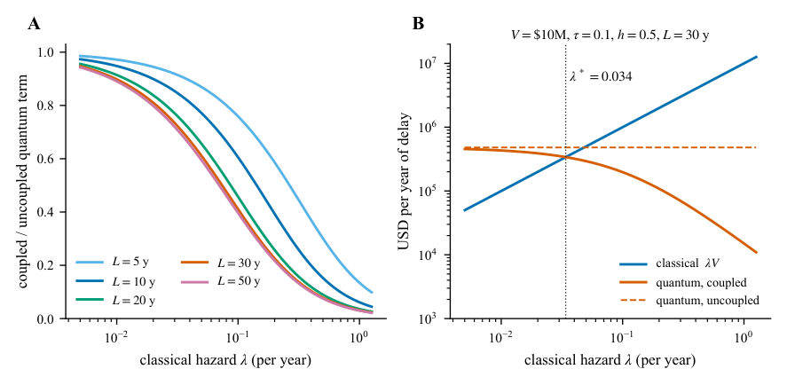
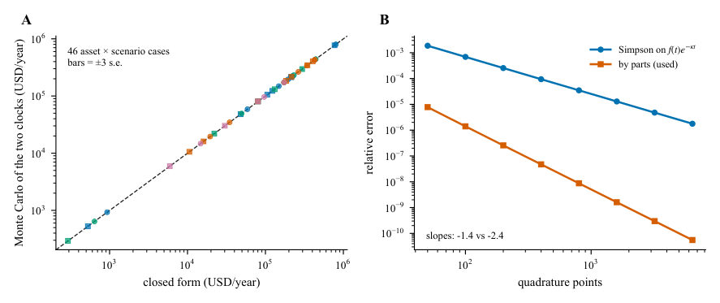
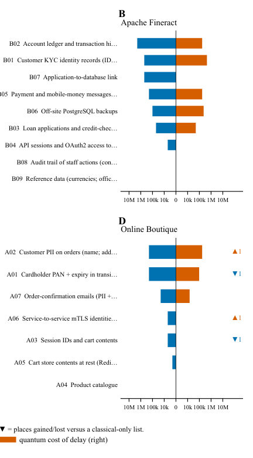
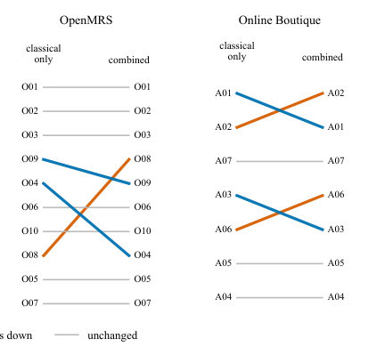
Summary. This paper creates a novel, unified metric to help organizations prioritize post-quantum cryptographic migration by combining classical data breach risks with future quantum computing threats. It mathematically proves how these two distinct risks interact using a competing-risks model. The resulting 'Cost of Delay' score provides an optimal, actionable ordering for security investments.
Why it may be interesting. While not physics-focused, the rigorous mathematical modeling of competing failure processes and the use of survival analysis techniques are highly relevant to open quantum systems modeling where multiple decoherence or failure channels compete.
Main problem. The paper addresses the lack of a common metric for prioritizing data migration to post-quantum cryptography, balancing immediate classical security risks against future quantum threats.
Main result. It develops a unified 'Cost of Delay' metric that successfully couples classical and quantum risks, demonstrating that the quantum threat can significantly reorder asset prioritization compared to classical-only assessments.
Method. The authors model both risks as a 'cost of delay' in currency per year, using a competing-risks framework that combines an annualized classical loss expectancy with a quantum loss rate derived from an arrival law.
Model / system. The model is an abstract risk assessment framework applied to digital assets, using parameters like data value, turnover, classical hazard rates, and a Weibull-fitted arrival law for a Cryptographically Relevant Quantum Computer (CRQC).
Key observables. The primary observable is the total Cost of Delay (CoD), which dictates the optimal sequence for security upgrades.
Important parameters / regimes. Key parameters include the classical hazard rate ($\lambda$), data value ($V$), data lifetime ($L$), and the quantum arrival rate derived from expert anchors.
Assumptions / limitations. Major assumptions include that parameters are assumed from public documentation rather than elicited from practitioners, and that the model only covers confidentiality risk.
Figures summary. Figures illustrate the race between classical and quantum attackers over time, show the dominance threshold ($\lambda^*$) where quantum risk takes over, and demonstrate the quantum term's ability to reorder assets beyond input uncertainty.
Paper structure. The paper introduces the unified CoD metric, proves mathematical propositions regarding its structure, validates the construction using simulations, and applies the model to several public system case studies.
Organisations deciding which assets to migrate to post-quantum cryptography first, and how that work competes with a backlog of classical findings, lack a common unit: post-quantum scores are dimensionless and quantum-only, while classical risk is annualised loss. We express both threats as a cost of delay in currency per year on the same asset. The quantum term is the rate at which deferring migration commits irreversible harvest-now-decrypt-later loss, computed from required confidentiality duration, recordable traffic share and data turnover, using a quantum-arrival law fitted in closed form to published expert anchors. A competing-risks factor couples the two terms so the same loss is not counted twice. We prove that the construction is not a weighted sum of a classical and a quantum score, give a dominance threshold on the classical hazard that is independent of asset value, and show that the induced order is optimal for sequencing work under constant loss rates. We verify the implementation by simulation, adaptive quadrature and a second implementation. On four public systems with parameters assumed from public documentation, the quantum term reorders the asset list beyond input uncertainty for one system only (signal-to-noise 1.36 against 0.14-0.46), moves specific long-lived, quiet, recordable assets decisively, and otherwise changes magnitudes. Asset value and turnover explain 73-91% of the uncertainty in the quantum term; the arrival date explains 3-17%. The case studies are illustrative and are not validated against outcomes.
Authors: Joaquin Chung, Michal Hajdušek, Naphan Benchasattabuse, Robert J. Hayek, Alexander Kolar, Ansh Singal, Kento Samuel Soon, Kentaro Teramoto, Allen Zang, Caitao Zhan, Raj Kettimuthu, Rodney Van Meter
Type: theory · Category: quantum information and computing · PDF: https://arxiv.org/pdf/2610.09322v1
Analysis basis: full PDF text, analyzed in chunks
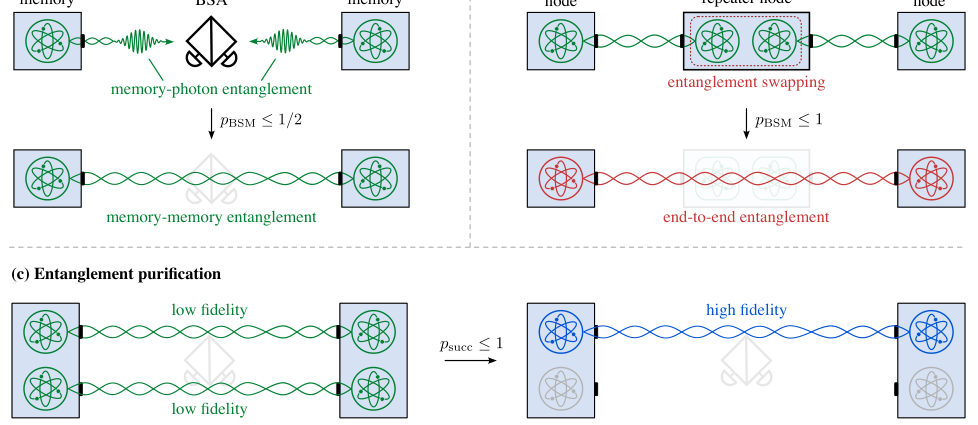
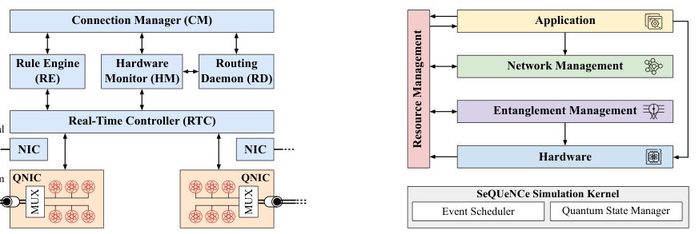
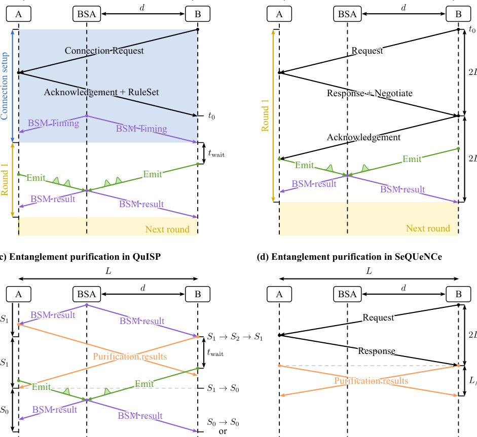
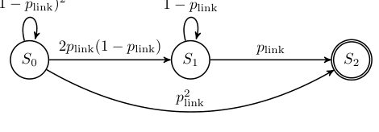
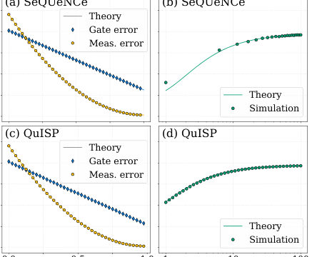
Summary. This paper compares two open-source quantum network simulators, QuISP and SeQUeNCe, by cross-validating basic tasks like entanglement generation and purification. The authors find that while the simulators disagree on the time taken for these tasks, they correctly predict the final resource fidelity under the same noise conditions. This work establishes a vital benchmark for improving the reliability of quantum network simulations.
Why it may be interesting. It provides a rigorous benchmarking methodology for quantum network simulators, which is crucial for developing reliable protocols for future quantum internet architectures.
Main problem. To ensure the consistency and accuracy of simulation outputs when modeling quantum network tasks across different open-source simulators.
Main result. The simulators show quantitative differences in task completion time due to connection models, but they agree on the final fidelity of distributed resources under identical error parameters.
Method. A comparative analysis (cross-validation) was performed by simulating fundamental quantum networking primitives like entanglement generation, swapping, and purification using two distinct simulators.
Model / system. The study models quantum networks, which utilize photonic qubits and quantum memories to distribute entanglement over long distances, simulating first-generation (1G) repeater protocols.
Key observables. Latency of resource distribution (time required for tasks) and the fidelity of the distributed entangled resources.
Important parameters / regimes. Error parameters (e.g., Pauli noise, qubit loss), connection model assumptions, and classical communication timing.
Assumptions / limitations. The comparison assumes that the core physics of resource fidelity is correctly modeled, even if the timing mechanics differ between simulators.
Figures summary. Figure 1 illustrates the three core processes: link-level entanglement generation (MIM), entanglement swapping at a repeater node, and entanglement purification.
Paper structure. The paper establishes a comparative framework by detailing the simulation of basic quantum networking tasks, comparing the results from QuISP and SeQUeNCe, and concluding with a methodology for future cross-validation.
We present a comparative analysis of two open-source quantum network simulators, QuISP and SeQUeNCe, focusing on cross-validation of basic networking tasks to ensure consistency and accuracy in simulation outputs. Although both simulators are designed to study quantum network management policies and their dynamics under complex noise models, their differing underlying assumptions can lead to variations in simulation results. We highlight the discrepancies in how the two simulators handle connections, internal network node processing time, and classical communication, resulting in significant quantitative and qualitative differences in the time required to perform basic network tasks such as entanglement generation, purification, and swapping. We simulate common scenarios between the simulators to compare both the latency of resource distribution and the fidelity of the distributed resources. Our findings indicate that while the simulators differ in the time required to complete network tasks---a constant factor difference attributable to their respective connection models---they agree on the fidelity of the distributed resources under identical error parameters. This work demonstrates a crucial first step towards enhancing the reliability and reproducibility of quantum network simulations, as well as leading to full protocol development. Furthermore, our benchmarking methodology establishes a foundational set of tasks for the cross-validation of simulators to study future quantum networks.
Authors: Fan Yang, Jian Gao, Lu Liu, Yuhai Liu
Type: theory · Category: statistical mechanics · PDF: https://arxiv.org/pdf/2610.10467v1
Analysis basis: full PDF text, analyzed in chunks
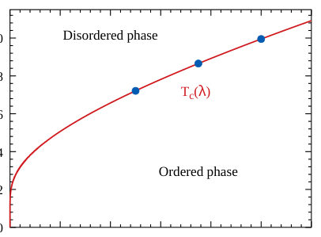
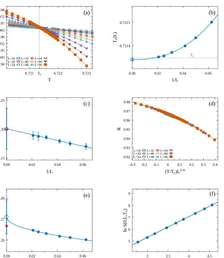
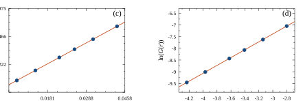
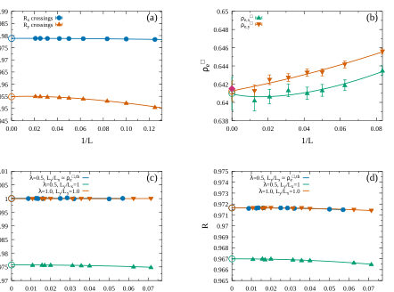
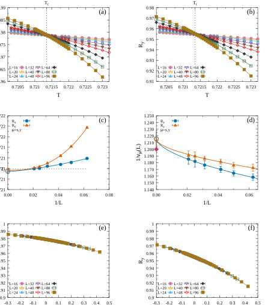
Summary. This paper studies the anisotropic three-state Potts model on a square lattice to determine how spatial anisotropy affects its critical behavior. Using Monte Carlo simulations and finite-size scaling, the authors show that while anisotropy alters the system's effective geometry, the underlying bulk critical universality class remains robustly that of the isotropic three-state Potts model.
Why it may be interesting. The work provides a detailed theoretical understanding of how lattice geometry and anisotropy manifest at criticality, offering a quantitative framework (effective-geometry rescaling) to separate universal physics from non-universal boundary effects.
Main problem. To investigate whether spatial anisotropy in the two-dimensional three-state Potts ferromagnet modifies the bulk critical universality class or primarily affects the finite-size critical geometry.
Main result. The study concludes that spatial anisotropy changes the effective critical geometry (e.g., directional correlation ratios) but does not alter the bulk critical universality class, which remains consistent with the 2D three-state Potts model.
Method. The research employs Wolff single-cluster Monte Carlo simulations and finite-size scaling analysis, supplemented by the analysis of Fisher zeros and directional correlation ratios.
Model / system. The system is an anisotropic three-state Potts ferromagnet defined on a square lattice with Hamiltonian $H = -\sum_{\langle ij angle_x} J_x \delta_{\sigma_i, \sigma_j} - \sum_{\langle ij angle_y} J_y \delta_{\sigma_i, \sigma_j}$. The anisotropy is controlled by the ratio $\lambda = J_y/J_x$.
Key observables. Overall correlation ratio ($R$), directional correlation ratios ($R_x, R_y$), correlation-length exponent ($ u$), specific-heat exponent ($\alpha$), and the effective aspect ratio ($ ho_e$).
Important parameters / regimes. The anisotropy ratio $\lambda$ is varied, with specific studies conducted for $\lambda = 0.5, 0.75, ext{ and } 1$.
Assumptions / limitations. The analysis assumes that the effective geometry rescaling can account for directional splitting in finite-size observables, and that the effective aspect ratio can be determined from critical FK wrapping probabilities.
Figures summary. Figures illustrate the phase diagram, finite-size scaling results for correlation ratios, and the comparison of directional ratios ($R_x, R_y$) showing how geometric compensation restores directional equivalence.
Paper structure. The paper systematically analyzes the critical behavior using multiple diagnostic tools (FSS, Fisher zeros, directional ratios) to distinguish between universal bulk properties and non-universal geometric effects induced by anisotropy.
We study the two-dimensional anisotropic three-state Potts ferromagnet on the square lattice using Wolff single-cluster Monte Carlo simulations and finite-size scaling. For coupling ratios $λ=J_y/J_x=0.5$, $0.75$, and $1$, finite-size scaling of the correlation ratio yields critical behavior consistent with the two-dimensional three-state Potts universality class. The scaling of the leading Fisher zeros gives a correlation-length exponent consistent with $ν=5/6$, while their cumulative density is consistent with the expected specific-heat exponent $α=1/3$. We further characterize the anisotropy at criticality using directional correlation ratios $R_x$ and $R_y$ together with directional FK wrapping probabilities. For $λ=0.5$ on a physically square lattice, $R_x$ and $R_y$ approach distinct critical values while yielding a common correlation-length exponent. From the wrapping probabilities, we independently determine an effective aspect ratio $ρ_e^\square=0.6413(5)$, in close agreement with the theoretical value $ρ_e^{\square,\mathrm{th}}\simeq0.64150030$ obtained from the isoradial representation. Using the theoretical value to set the physical aspect ratio restores directional equivalence, $R_x\simeq R_y$, and brings the overall correlation ratio toward the isotropic-square reference. The results show that spatial anisotropy changes the effective critical geometry without altering the bulk three-state Potts universality class.
Authors: Hana Schiff, Judit Romhányi, Paul McClarty, Jeffrey G. Rau
Type: theory · Category: strongly correlated electrons · PDF: https://arxiv.org/pdf/2610.10523v1
Analysis basis: full PDF text, analyzed in chunks
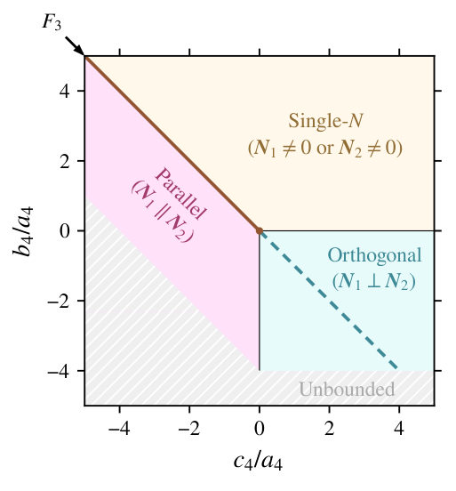
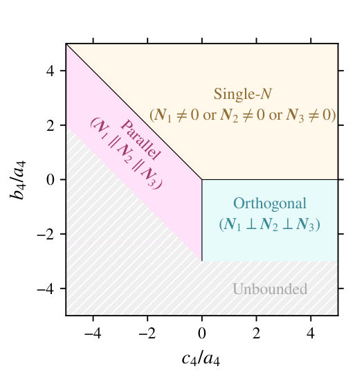
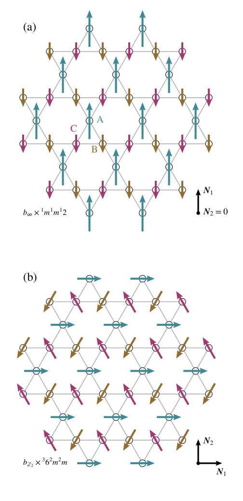
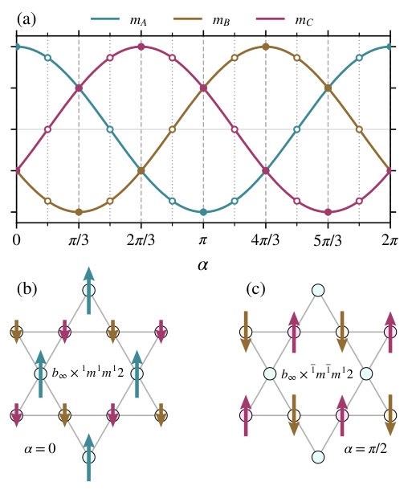
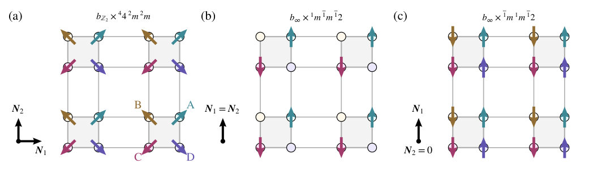
Summary. This work establishes a comprehensive Landau theory framework for non-relativistic magnetism, generalizing previous work to handle complex coplanar and non-coplanar magnetic orders. By constructing symmetry-allowed free energies, the authors provide a direct, rigorous link between Landau theory and the spin space group approach. This allows for detailed predictions of magnetic observables across various crystal symmetries.
Why it may be interesting. While focused on magnetism, the rigorous application of symmetry constraints (group theory) to derive effective Hamiltonians and predict phase transitions is a powerful general technique applicable to any strongly correlated system where symmetry breaking is key.
Main problem. The paper develops phenomenological Landau theories to describe magnetic phase transitions in non-relativistic magnetic systems, extending the analysis from simple collinear orders to complex coplanar and non-coplanar arrangements.
Main result. The theory predicts two main outcomes: a collapse to a lower-symmetry collinear phase, or a genuinely orthogonal coplanar/non-coplanar order that directly links the Landau theory framework to the spin space group classification.
Method. The core method involves constructing symmetry-allowed free energies up to quartic order using group theory, analyzing how the free energy depends on the dimensionality of the order parameter's irreducible representation.
Model / system. The study focuses on non-relativistic magnetic systems exhibiting zero-wavevector (k=0) magnetic orders, treating the magnetic state via order parameters transforming according to irreducible representations of the crystallographic point group.
Key observables. Net magnetization, spin conductivity, multipolar moments, and piezomagnetism.
Important parameters / regimes. Zero-wavevector (k=0) magnetic orders; tetragonal, trigonal/hexagonal, and cubic symmetries.
Assumptions / limitations. The analysis assumes the system is near a continuous phase transition, allowing for a low-order polynomial expansion of the free energy, and focuses on single irreducible representations of the point group.
Figures summary. The notes do not describe specific figures, but mention the use of symmetry-adapted tensors (Table XI) to constrain the free energy expansion terms.
Paper structure. The paper is structured logically, starting with the general Landau problems and epikernels, moving to multi-dimensional Landau theories, detailing the orthogonal orders, providing specific examples (Kagomäe, pyrochlore), calculating observables, and finally connecting to related physical systems.
In this work we study phenomenological Landau theories of non-relativistic magnetic systems, generalizing work on the collinear case to coplanar and non-coplanar orders. Focusing on zero-wavevector ($\boldsymbol{k}=0$) magnetic orders described by a single irreducible representation of the crystallographic point group, we construct the symmetry-allowed free energies to quartic order for all possible multi-dimensional irreducible ordering channels. We find distinct Landau theories for tetragonal, trigonal/hexagonal, and cubic symmetry. Similar to the case of spin-nematic fluids, we find two natural outcomes: a collapse to a lower-symmetry collinear phase or a genuinely coplanar or non-coplanar order where the order parameters form a mutually orthogonal set in spin space -- reminiscent of the $A$ and $B$ phases in ${}^3$He. We show in general that this symmetry-broken phase realizes the spin space group associated with the spatial representation of the order parameter sharing the same parent space group as the paramagnetic phase. This provides a direct link between the Landau and spin space group approaches. We calculate key observables using this Landau approach, including net magnetization, spin conductivity, multipolar moments, and piezomagnetism, connecting our results to constraints from the underlying spin space group. Examples of coplanar and non-coplanar magnetic orders for each case are worked out in detail. Finally, we discuss the relationship of the lower-symmetry collinear phases to the usual collinear spin groups, as well as connections to atomic altermagnetism, superfluid ${}^3$He and electronic nematic phases.
Authors: Ziqiang Guan, Sophia F. R. TenHuisen, Xuefei Guo, Wei He, Aulden K. Jones, Marli dos Reis Cantarino, Xinglong Chen, Hong Zheng, J. F. Mitchell, Nicholas B. Brookes, Mark P. M. Dean, Matteo Mitrano
Type: both · Category: strongly correlated electrons · PDF: https://arxiv.org/pdf/2610.09210v1
Analysis basis: full PDF text, analyzed in chunks
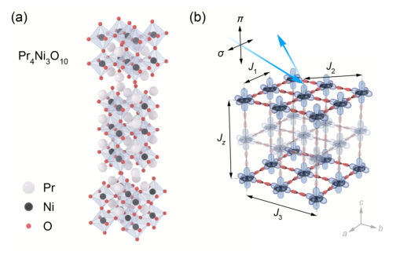
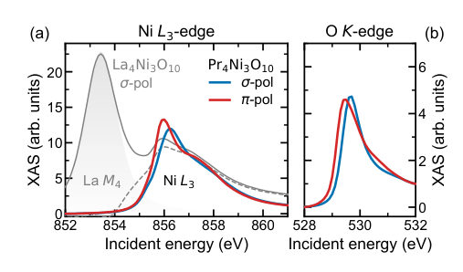
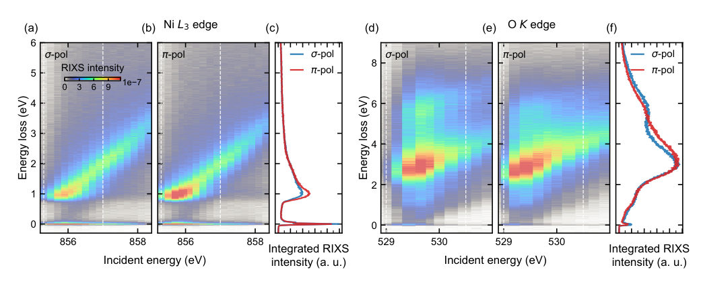
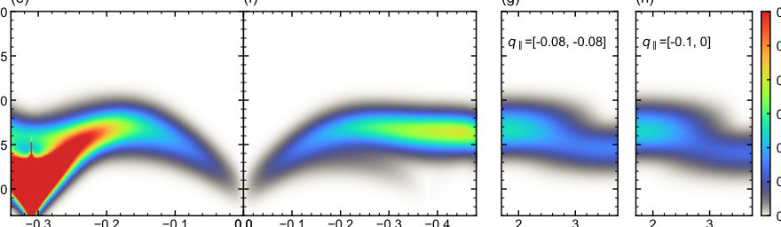
Summary. This work uses XAS and RIXS spectroscopy to characterize the electronic structure and magnetic excitations in the trilayer nickelate $ ext{Pr}4 ext{Ni}_3 ext{O}$. By analyzing the magnetic response and fitting to spin-wave models, the authors determine that the magnetic interactions are governed by a balanced interplay between in-plane and interlayer couplings, establishing the multilayer architecture as the primary determinant of magnetic behavior.
Why it may be interesting. The detailed mapping of magnetic interactions using spectroscopic probes like RIXS provides quantitative insight into the underlying quantum magnetic Hamiltonian, which is crucial for understanding strongly correlated electron behavior in cuprate/nickelate superconductors.
Main problem. The study aims to understand how the multilayer nickelate architecture controls electronic and magnetic interactions in $ ext{Pr}4 ext{Ni}_3 ext{O}$, particularly how rare-earth substitution affects these magnetic couplings.
Main result. The magnetic interactions are governed by a balanced network of significant in-plane and interlayer couplings, suggesting the multilayer structure, rather than rare-earth substitution alone, is the key control knob.
Method. The research combines advanced experimental techniques (XAS and polarization-dependent RIXS) with theoretical modeling (Spin-Wave Analysis and fitting to various Hamiltonian models).
Model / system. The system is the trilayer Ruddlesden-Popper nickelate $ ext{Pr}4 ext{Ni}_3 ext{O}$. The analysis models the magnetic interactions using effective exchange couplings ($J_1, J_2, J_3, J_z$) within a spin-wave framework.
Key observables. Dispersive magnetic excitations, orbital hybridization channels (planar vs. out-of-plane), and effective exchange couplings ($J_1, J_2, J_3, J_z$).
Important parameters / regimes. Exchange couplings are found to be in the $\sim 10-16 ext{ meV}$ range, indicating a balanced magnetic network.
Assumptions / limitations. The conventional Linear Spin-Wave Theory (LSWT) is favored as the most direct quantitative description, although comparisons with entangled-dimer and stripe-dimer models were made.
Figures summary. Figures illustrate the crystal structure and effective magnetic interaction model, while RIXS maps show the momentum and energy dependence of the magnetic response.
Paper structure. The paper first uses XAS/RIXS to map the multiorbital electronic structure and anisotropy. It then uses momentum-resolved RIXS to identify dispersive magnetic excitations softening toward the SDW wave vector. Finally, it employs spin-wave analysis and fitting to various Hamiltonian models to quantify the exchange couplings.
Rare-earth substitution strongly modifies the structure, metallicity, and superconducting behavior of Ruddlesden-Popper (RP) nickelates, but its impact on their magnetic interactions remains unclear. Here, we combine x-ray absorption spectroscopy (XAS) and resonant inelastic x-ray scattering (RIXS) to resolve the multiorbital electronic structure and magnetic excitations of Pr$_4$Ni$_3$O$_{10}$. The absence of an overlapping rare-earth resonance provides direct access to the Ni $L_3$ edge, while polarization-dependent measurements at the Ni $L$- and O $K$-edges resolve distinct planar and out-of-plane Ni-O hybridization channels. Momentum-resolved RIXS reveals dispersive magnetic excitations that soften toward the incommensurate spin-density-wave wave vector. An effective spin-wave analysis yields a sizable intra-trilayer exchange coupling, comparable to the leading in-plane interactions and robust against rare-earth substitution. Our results identify the multilayer architecture, rather than rare-earth substitution alone, as a key control knob of the magnetic interactions in these materials.
Authors: Lord Sen, Shyamapada Mukherjee
Type: both · Category: quantum information and computing · PDF: https://arxiv.org/pdf/2610.09947v1
Analysis basis: full PDF text, analyzed in chunks
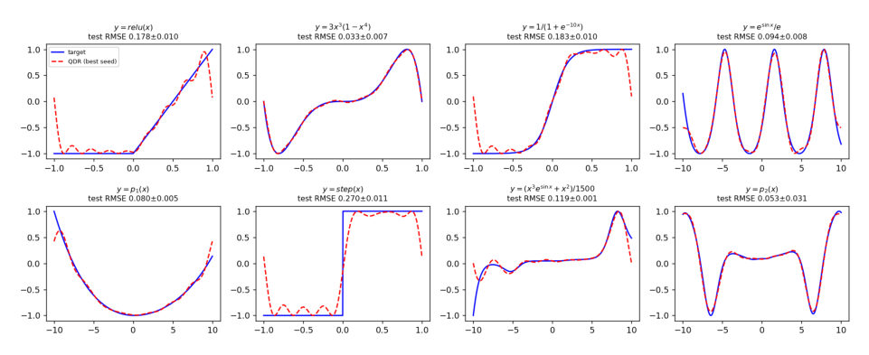
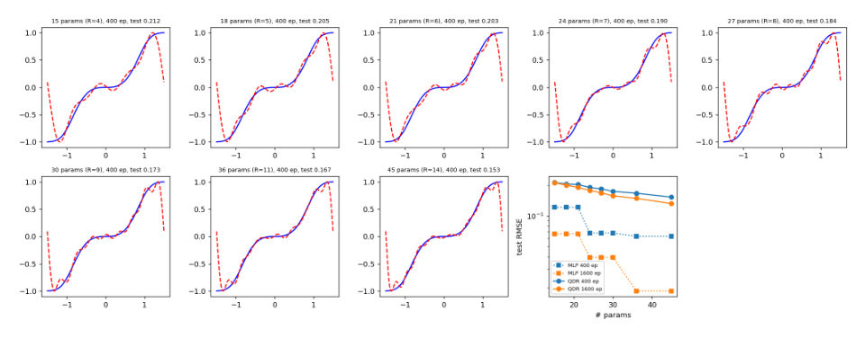
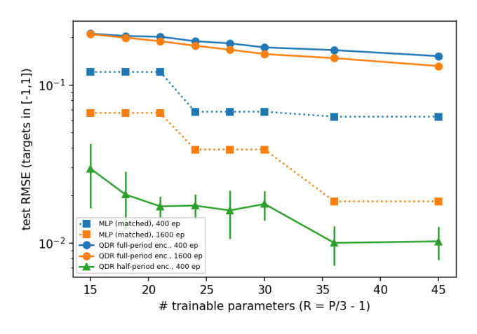
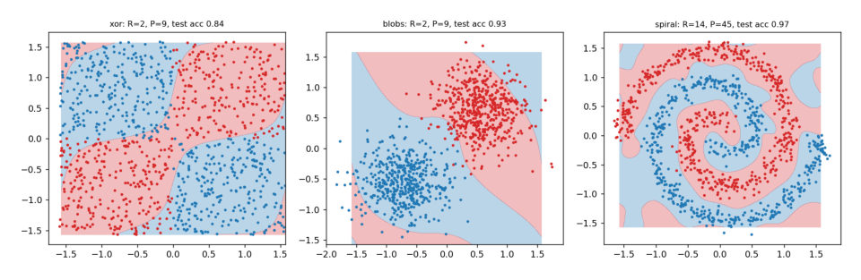
Summary. This paper provides a deep theoretical and experimental analysis of Quantum Data Reuploaders (QDRs), characterizing their achievable frequency spectrum using Fourier analysis. It derives capacity bounds based on this spectrum size and compares QDR performance against classical MLPs on various function approximation and classification tasks. The findings highlight that while QDRs have a theoretically structured capacity, their practical performance is highly sensitive to input scaling and dimensionality.
Why it may be interesting. This work provides rigorous mathematical tools (Fourier analysis, sumsets) to quantify the limitations of quantum circuit depth in approximating classical functions, which is crucial for understanding the practical utility of variational quantum algorithms.
Main problem. The paper investigates the expressive power and capacity of Quantum Data Reuploaders (QDRs), a specific architecture for Quantum Neural Networks (QNNs). It aims to characterize how the structure of the quantum circuit limits the functions it can approximate.
Main result. The accessible frequency spectrum of QDRs grows polynomially with the reuploading depth $R$, leading to a capacity bound proportional to $\sqrt{|KR|/n}$. Experimentally, QDRs perform well on certain tasks but are limited in multivariate regression compared to MLPs.
Method. The analysis relies heavily on Fourier theory, mapping the quantum circuit output to a finite Fourier series whose frequency set $KR$ is characterized using sumsets and word length metrics on an integer lattice.
Model / system. The model is the QDR architecture, $U( heta, x) = W_{R+1}V(x)W_R( heta) \cdots W_1$, where $V(x)$ encodes classical data $x$. The analysis is performed on the resulting output function $f_ heta(x)$, which is a finite Fourier series.
Key observables. Test Root Mean Square Error (RMSE) for regression tasks (e.g., $ anh(x^3/3)$) and classification accuracy for tasks like XOR and spirals.
Important parameters / regimes. The reuploading depth $R$, the input scale $\sigma$, the number of qubits $n$, and the number of trainable parameters $P$.
Assumptions / limitations. The analysis assumes the encoding $V(x)$ has a finite phase decomposition, and the theoretical bounds rely on the structure of the frequency set $KR$.
Figures summary. Figures compare the test RMSE of QDRs versus matched MLPs across various targets (ReLU, sigmoid, $ anh(x^3/3)$) and show decision boundaries for classification tasks.
Paper structure. The paper first establishes the theoretical characterization of the frequency spectrum $KR$ using Fourier analysis. It then derives capacity bounds based on the size of this spectrum. Finally, it presents extensive experiments comparing QDR performance against MLPs on regression and classification tasks.
Data reuploading---repeatedly encoding classical inputs at multiple layers of a parameterized quantum circuit---is a central mechanism for enhancing the expressivity of quantum neural networks (QNNs). Building on the Fourier-theoretic framework of Schuld et al.~\cite{schuld2021fourier}, we study the frequency spectrum of the general multivariate, $R$-reupload architecture (QDR). (i) We make explicit that the accessible frequencies form the set $K_R=S^{(R)}-S^{(R)}$, which equals the $R$-fold sumset $T^{(R)}$ of the difference set $T=S-S$ of the encoding spectrum, and we characterise it exactly: $K_R=\{k\in\mathcal L:\ \ell_T(k)\le R\}$, where $\mathcal L=\mathrm{span}_{\mathbb Z}(T)$ is an integer lattice and $\ell_T$ is word length in $T$. (ii) We show that the \emph{directions} of the spectrum stabilise already at $R=1$ (the real span of $K_R$ equals that of $\mathcal L$), whereas the spectrum itself never saturates: the maximal frequency grows linearly in $R$ and the number of frequencies grows polynomially, as $Θ(R^{m})$ with $m=\mathrm{rank}\,\mathcal L$. (iii) Using the spectrum size, we give a Rademacher-complexity bound on the capacity of QDRs of order $\sqrt{|K_R|/n}$. (iv) We report experiments on function approximation and classification with train/test splits, several seeds and parameter-matched classical baselines. The simulated spectra match the theory exactly. A single-qubit QDR beats a matched MLP on several smooth or periodic univariate targets and on the spiral task, but it is clearly worse on multivariate regression ($d\ge4$), where it is highly sensitive to the input-encoding scale; it beats the MLP only on equations with $d\le3$ inputs.
Authors: Eike S. Eberhard, Xaver Kainz, Viktor Kotsev, Abdulrahman Aldossary, Stephan Günnemann
Type: theory · Category: disordered systems and neural networks · PDF: https://arxiv.org/pdf/2610.10298v1
Analysis basis: full PDF text, analyzed in chunks
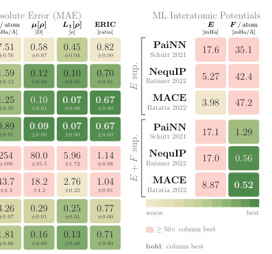
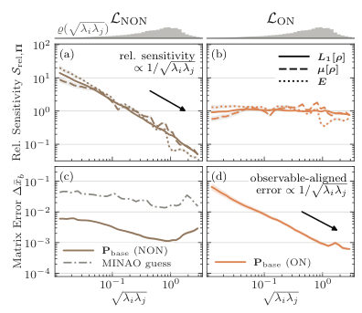
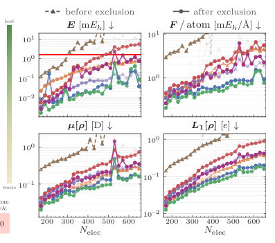
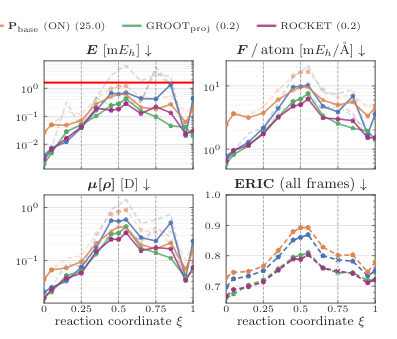
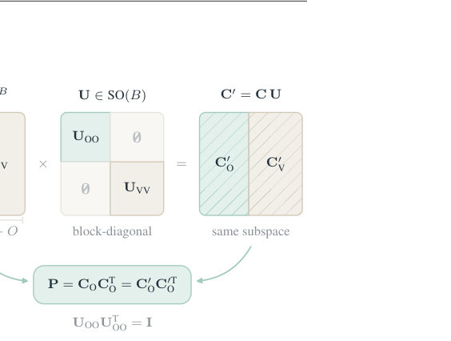
Summary. This paper introduces advanced machine-learned descriptor models designed to predict electronic ground states by embedding the physical constraints of Kohn-Sham DFT directly into the loss functions. By enforcing mathematical rules like orthonormality and manifold membership, the models achieve superior generalization and accuracy, significantly outperforming prior state-of-the-art methods in predicting molecular properties.
Why it may be interesting. This work directly addresses the integration of deep learning into quantum chemistry, providing mathematically rigorous methods to ensure that ML predictions respect fundamental physical laws, which is crucial for reliable simulations in AMO physics.
Main problem. The primary challenge is accelerating the accurate prediction of electronic ground states for molecules and materials while ensuring the predictions remain physically valid and generalize well beyond the training data.
Main result. The proposed descriptor models, incorporating physical constraints like orthonormal loss (ON-Loss) and manifold projection (GROOT/ROCKET), significantly reduce energy and force errors (up to 99.8% reduction) compared to previous state-of-the-art methods.
Method. The authors develop and apply specialized machine learning architectures (GSMs) that are explicitly aligned with the governing equations of Kohn-Sham DFT by enforcing physical constraints during training.
Model / system. The system is the electronic ground state of molecules/materials, governed by the Kohn-Sham DFT equations. The ML models predict descriptors (like the density matrix or Hamiltonian) that must satisfy physical constraints, such as belonging to the Grassmann manifold.
Key observables. Energy (E) and Force (F) Mean Absolute Error (MAE); convergence speed (ERIC); and the ability to maintain accuracy below chemical accuracy ($\sim 0.8$ mHa).
Important parameters / regimes. The comparison involves size extrapolation (QM9 to QM40) and testing on out-of-distribution molecules (QMugs).
Assumptions / limitations. The core assumption is that by enforcing physical constraints derived from the underlying quantum mechanics (e.g., idempotency, orthonormality), ML models can overcome the limitations of standard supervised learning on electronic structure data.
Figures summary. The notes indicate comparisons across multiple tables showing MAE reductions for various models (Pbase, GROOTrot, ROCKET) across different generalization tests (size extrapolation, self-consistency fine-tuning).
Paper structure. The paper systematically introduces the limitations of current ML potentials, proposes physically constrained descriptor models (GSMs) using novel loss functions (ON-Loss, GROOT, ROCKET), and validates these methods through rigorous testing on size extrapolation and self-consistency refinement.
Machine-learned interatomic potentials (MLIPs) excel at in-distribution tasks, accelerating drug and material development, yet they struggle to generalize out-of-distribution. We propose to push the cost-accuracy Pareto frontier by designing observable-agnostic electronic ground-state descriptor models (GSMs) with computational costs situated between MLIPs and Kohn-Sham density functional theory (KS-DFT). We align the learning objectives and architectures of GSMs with the governing equations of KS-DFT by enforcing physical constraints and removing optimization pressure on unphysical or irrelevant degrees of freedom. In our size-extrapolation experiments from QM9 to QM40, our combined contributions OrthoNormal-Loss (ON-Loss) and Grassmann Restricted Occupied-Orbital Training (GROOT) reach a 79.1% energy and 83.4% force mean absolute error (MAE) reduction over previous state-of-the-art density GSMs. For Hamiltonian GSMs, ON-Loss and Residual Optimal-gauge Conditioning-aware KS-Eq. Training (ROCKET) together reduce the energy and force MAEs of the strongest baseline by 99.8% and 95.9%, respectively. Using a self-consistency rejection criterion, we filter out extrapolation errors on QMugs, rejecting fewer than 0.4% of predictions while reaching an energy MAE of 0.07 mHa. Finally, we demonstrate the efficiency of label-free self-consistency fine-tuning, and transfer GSMs to reactive chemistry in Transition1x, reaching energy errors below chemical accuracy.
Authors: Stuart Hadfield
Type: theory · Category: quantum information and computing · PDF: https://arxiv.org/pdf/2610.09584v1
Analysis basis: full PDF text, analyzed in chunks
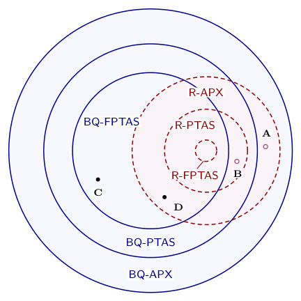
Summary. This paper rigorously defines quantum complexity classes for approximating solutions to classical optimization problems. It establishes a strict hierarchy among these quantum classes, demonstrating that quantum computation can yield provable worst-case improvements over classical algorithms for certain problems, provided that $ ext{NP} ot\subseteq ext{BQP}$.
Why it may be interesting. While not directly about AMO physics, the rigorous framework for quantifying computational advantage (quantum vs. classical) is foundational for understanding the limits of quantum simulation and computation in physical systems.
Main problem. The paper investigates the quantum approximation complexity of classical optimization problems, aiming to determine the best solution quality achievable using quantum computation compared to classical methods.
Main result. Under the assumption that NP is not contained in BQP, the quantum complexity classes form a strict hierarchy (BQ-FPTAS $\subsetneq$ BQ-PTAS $\subsetneq$ BQ-APX), and quantum computation can provide worst-case improvements over classical guarantees for certain problems.
Method. The authors define quantum counterparts to classical approximation classes (BQ-APX, BQ-PTAS, BQ-FPTAS) and use conditional separations based on the hardness of problems like factoring and discrete logarithms to establish these theoretical gaps.
Model / system. The analysis is purely theoretical, focusing on computational complexity classes (APX, PTAS, etc.) and the computational power of quantum algorithms (BQP) applied to classical optimization problems.
Key observables. Approximation ratios ($\alpha, ho$), success probability (fixed at $\ge 2/3$), and the relationship between the expected score and the guaranteed output ratio.
Important parameters / regimes. The complexity assumptions, notably $ ext{NP} ot\subseteq ext{BQP}$, and the specific approximation factors (e.g., one-half for DLog-Fit).
Assumptions / limitations. The entire framework relies on the assumption that $ ext{NP} ot\subseteq ext{BQP}$, and the analysis for specific problems assumes the hardness of factoring or discrete logarithms.
Figures summary. Figure 1 schematically illustrates the inclusion relationships between various approximation classes for several example problems (A-D).
Paper structure. The paper first defines the quantum approximation complexity classes, then establishes the hierarchy relationships, and finally proves conditional separations using specific number-theoretic problems (like factoring and discrete logarithms) to demonstrate quantum advantages.
Classical approximation complexity asks what solution quality can be guaranteed with polynomial-time computation. The classes APX, PTAS, and FPTAS distinguish a fixed approximation ratio, approximation to any fixed accuracy, and approximation schemes whose running time is also polynomial in inverse accuracy. Their randomized counterparts are R-APX, R-PTAS, and R-FPTAS. We define bounded-error quantum counterparts BQ-APX, BQ-PTAS, and BQ-FPTAS. Membership requires a uniform quantum algorithm that, on every input, returns a feasible classical solution achieving at least the claimed approximation ratio with probability at least 2/3. Scores (objective values) must be efficiently classically computable. Running time includes parameter selection, preparation, measurement, decoding, and repetition. Many quantum optimization methods are used heuristically, and high benchmark scores alone do not establish these guarantees. We further establish a conditional hierarchy for logarithmic, polynomial, and exponential approximation factors. Assuming NP $\nsubseteq$ BQP, the quantum classes form a strict hierarchy. Problems based on prime factorization and discrete logarithms give conditional quantum-classical separations. Certified Maximum Order has an exact quantum algorithm, while any randomized polynomial-time algorithm guaranteeing at least an inverse-polynomial approximation ratio on every input would yield efficient factoring. Discrete-Logarithm Fitting has an exact quantum algorithm and a deterministic one-half approximation, but any fixed improvement over one half would give a randomized polynomial-time algorithm for the safe-prime discrete logarithm problem. Our results show, under explicit complexity assumptions, that quantum computation can improve worst-case approximation guarantees. A quantum-classical gap for common problems such as MaxCut or MaxSAT remains open.
Authors: Sarah Mostame, Tanvi P. Gujarati, Alberto Baiardi, Abhijit Mitra, Dimitar Trenev, Sumathy Raman
Type: theory · Category: other · PDF: https://arxiv.org/pdf/2610.09616v1
Analysis basis: full PDF text, analyzed in chunks
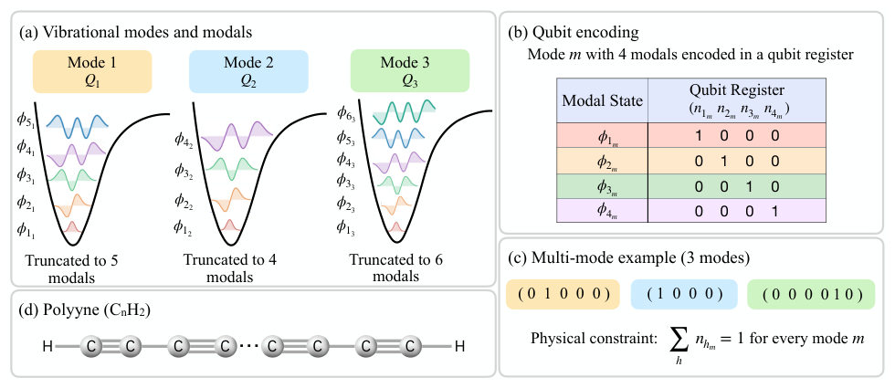
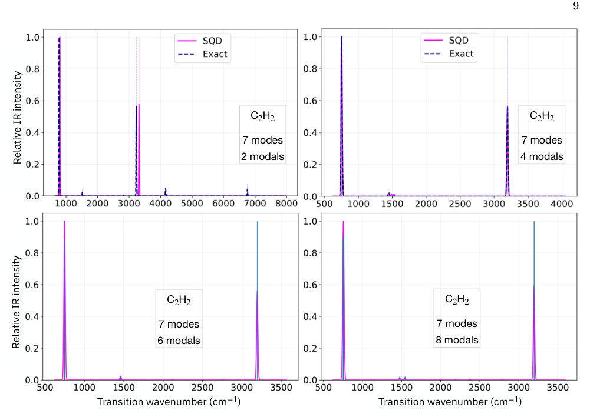
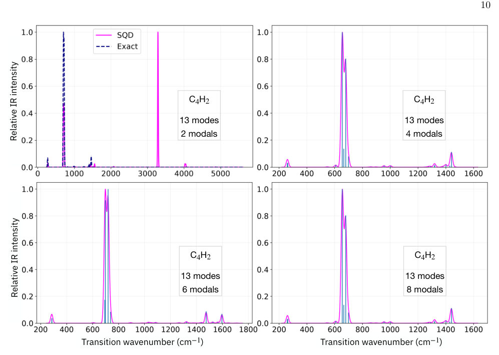
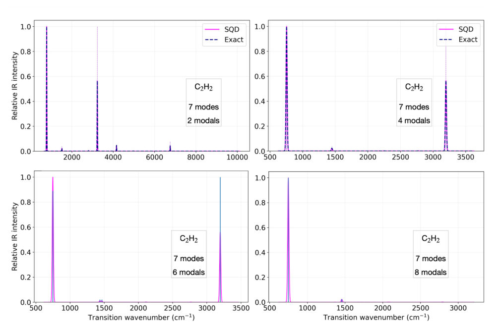
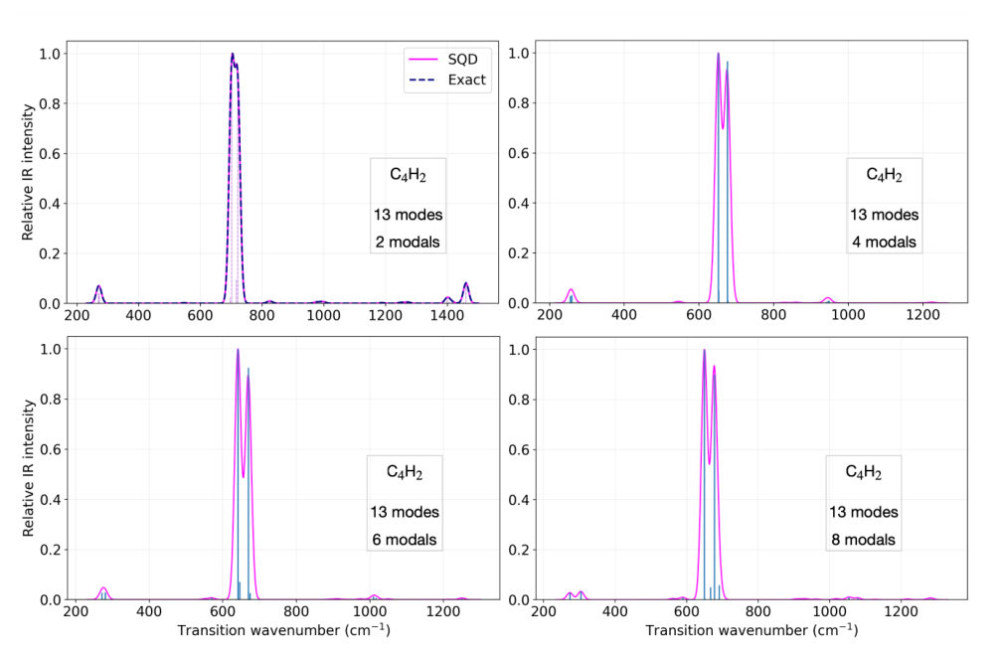
Summary. This paper introduces a Sample-based Quantum Diagonalization (SQD) method to calculate the complex anharmonic vibrational spectra of polyynes. By projecting the massive vibrational Hamiltonian onto a small, sampled subspace, the authors overcome the exponential scaling problem. The results demonstrate that this quantum approach can accurately predict both vibrational energies and sensitive spectroscopic details, like infrared intensities.
Why it may be interesting. This work directly addresses the simulation of molecular vibrations, a core topic in AMO physics, by developing a quantum algorithm to circumvent the exponential scaling inherent in full diagonalization of the vibrational Hamiltonian.
Main problem. The core challenge is predicting anharmonic vibrational spectra, which is computationally infeasible due to the exponential growth of the Hilbert space with molecular size.
Main result. The sample-based quantum diagonalization (SQD) framework successfully computes vibrational energies and spectroscopic observables for polyynes in subspaces far smaller than the full theoretical space.
Method. The authors employ an end-to-end SQD framework combining quantum state preparation (using vib-LUCJ or vib-SqDRIFT ansatze), configuration recovery, and diagonalization projected onto a selected subspace.
Model / system. The study focuses on polyyne chains (C2H2 and C4H2) whose anharmonic vibrational Hamiltonian is modeled using a multi-mode expansion. The electronic structure calculations are based on DFT (B3LYP/def2-SVP).
Key observables. Vibrational energies, infrared spectra, and transition-dipole moments (which determine intensities and excited-state composition).
Important parameters / regimes. The system size is quantified by the Hilbert space dimension, which can reach $\approx 5.5 \times 10^{11}$ for C4H2.
Assumptions / limitations. The primary limitations noted are the need for systematic optimization of sampling parameters and the fact that spectroscopic observables are more sensitive than ground-state energies.
Figures summary. Figures illustrate the modal representation and qubit encoding. Other figures compare SQD results for transition dipole moments ($0 \to m$ transitions) against exact diagonalization for C2H2 and C4H2.
Paper structure. The paper first establishes the computational bottleneck of anharmonic spectra. It then details the SQD framework, comparing two sampling strategies (vib-LUCJ and vib-SqDRIFT) to calculate energies and, critically, transition-dipole moments, concluding with resource estimates for quantum implementation.
Predicting anharmonic vibrational spectra is a complex computational task, which becomes quickly infeasible as molecular size and the number of vibrational basis functions increase, leading to an exponential growth of the underlying Hilbert space. Here, we employ a sample-based quantum diagonalization (SQD) framework to compute anharmonic vibrational energies and spectra. The approach combines quantum state preparation and sampling with configuration recovery, diagonalization of the Hamiltonian projected in a subspace of basis configurations, and calculation of transition-dipole moments to obtain both vibrational energies and infrared spectra. We investigate two approaches for sampling, namely, vib-LUCJ and vib-SqDRIFT and apply the method to study the polyyne molecules C$_2$H$_2$ and C$_4$H$_2$, reaching representations requiring up to 104 qubits. Beyond energies, transition-dipole calculations reveal that infrared intensities and excited-state composition continue to evolve with basis size through anharmonic mixing and intensity redistribution, even when low-energy eigenvalues appear converged. These results show that sample-based quantum subspace methods can capture spectroscopic information in vibrational spaces far beyond the regime of full diagonalization. Moreover, our simulation identify multi-state recovery and scalable projected-space treatment as central challenges for further scaling sample-based approaches.
Authors: Furqan Nasir, Sher Jeel Ahmad
Type: theory · Category: quantum information and computing · PDF: https://arxiv.org/pdf/2610.10490v1
Analysis basis: full PDF text, analyzed in chunks
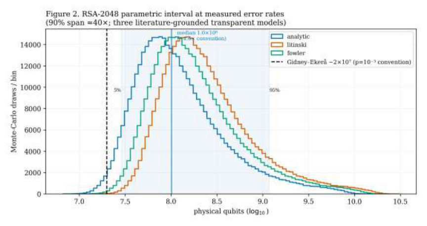
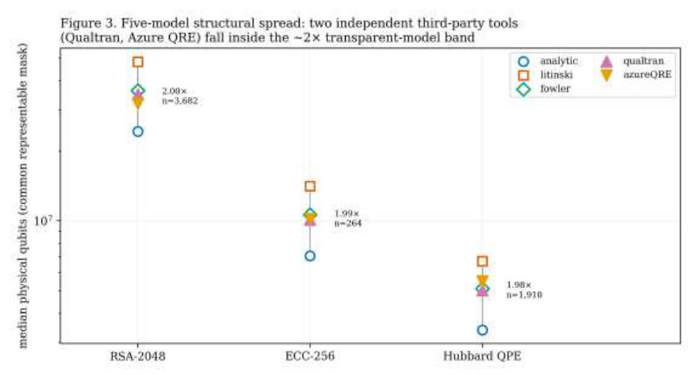
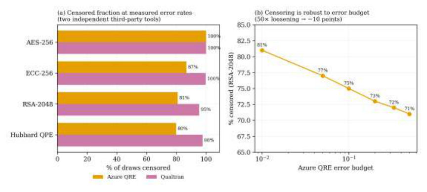
Summary. This paper introduces a robust framework to quantify the uncertainty in quantum resource estimates for fault-tolerant computing. By propagating evidence-based priors through multiple cost models, the authors demonstrate that current single-number estimates are misleading. The results show that using measured hardware error rates drastically increases the required resources and reveals significant structural disagreements between different estimation tools.
Why it may be interesting. It provides a rigorous, uncertainty-aware methodology for estimating resource requirements, which is crucial for any theoretical work aiming to connect abstract quantum algorithms to realistic hardware constraints.
Main problem. Standard estimates of quantum resources for fault-tolerant algorithms are reported as single numbers, failing to account for inherent hardware parameter uncertainties and disagreements among cost models.
Main result. Propagating measured error rates significantly widens resource estimates (e.g., 40x wider interval for RSA-2048) compared to optimistic conventions, and structural disagreements between cost models are substantial.
Method. The authors developed an open, tool-agnostic framework to propagate evidence-based priors over hardware parameters through multiple surface-code cost models, using advanced sensitivity analysis.
Model / system. The analysis is applied to superconducting two-dimensional nearest-neighbour surface-code architectures, evaluating workloads like RSA-2048, ECC-256, and AES-256.
Key observables. Physical-qubit count, resource intervals (e.g., 90% interval), and the fraction of parameter space an estimator can represent.
Important parameters / regimes. Physical two-qubit gate error rate (measured median $\approx 4 \times 10^{-3}$ vs. conventional $10^{-3}$), code distance, and model-specific constants.
Assumptions / limitations. The analysis is limited to the superconducting platform due to available error-rate measurements; the framework relies on propagating priors rather than predicting future performance.
Figures summary. Figures illustrate the dramatic widening of resource intervals due to measured error rates and the structural disagreement factors between different cost estimation models.
Paper structure. The paper introduces the uncertainty framework, applies it to several cryptographic and simulation workloads on superconducting hardware, and presents three coupled findings that undermine the single-number resource estimation convention.
Estimates of the quantum resources needed to run fault-tolerant algorithms are almost always reported as single numbers, even though they rest on uncertain hardware parameters and on cost models that disagree. We present an open, tool-agnostic framework that propagates evidence-based priors over fault-tolerant hardware parameters through five surface-code cost models, adds correlated-input sensitivity analysis, and evaluates the resulting intervals with a pre-registered three-layer protocol. Applied to RSA-2048, ECC-256, AES-256, and a Hubbard-model simulation on a superconducting surface-code architecture, it produces three coupled findings that together undermine the single-number convention. Propagating the error rates hardware has actually demonstrated, whose median across five large-array devices is about 4 x 10^-3 rather than the conventional 10^-3, widens the 90% physical-qubit interval to roughly forty times and lifts its median about 4.6 times above the conventional point estimate. Against the same inputs, five independently structured cost models, including two third-party estimators (the Azure Quantum Resource Estimator and Qualtran) that agree with each other to within about ten percent, disagree by a stable factor of two, a structural uncertainty that no single tool reveals. Most consequentially, both third-party estimators exceed their representable envelope for 80 to 100 percent of the evidence-based parameter space, and the AES-256 gate count overflows one tool's counter outright, so these workloads cannot be represented at measured error rates at all. The optimistic convention conceals every one of these effects. The uncertainty machinery we use is standard. The contribution is its evidence-based application, the pre-registered evaluation, and the finding that standard tools break down precisely where hardware operates.
Authors: Eudald Correig-Fraga, Roger Guimerà, Marta Sales-Pardo
Type: theory · Category: disordered systems and neural networks · PDF: https://arxiv.org/pdf/2610.10023v1
Analysis basis: full PDF text, analyzed in chunks
Summary. This paper investigates the computational role of fixed anatomical wiring in the fly visual system by creating a connectome-only neural network model. By comparing the actual connectome to randomized versions, the authors show that the specific, measured connectivity is crucial for achieving high computational accuracy under realistic wiring constraints. This suggests that biological structure dictates efficient operating regimes for complex sensory processing.
Why it may be interesting. While focused on biology, the use of graph theory, message passing, and comparing structured vs. random connectivity ensembles mirrors concepts in network science and disordered systems, which can inform models of complex quantum or classical computation.
Main problem. The central challenge is determining how much of the computational efficiency in the visual system is dictated solely by its measured synaptic wiring (connectome).
Main result. The biological connectome achieves higher accuracy than randomized ensembles at matched wiring cost, suggesting that the measured connectivity and eye geometry jointly set efficient operating points for visual computation.
Method. The authors built a 'connectome-only' message-passing model, fixing the anatomical graph and eye geometry while only learning synaptic gains and thresholds.
Model / system. The model uses the full connectome of the Drosophila visual system, taking visual input from an anatomically faithful eye model and passing it through the connectome graph to a Kenyon-cell-centered decoder.
Key observables. Task accuracy (color, shape, number discrimination), information propagation dynamics, and computational performance across different connectome ensembles.
Important parameters / regimes. Synaptic gains, neuronal thresholds, and the wiring cost (proxied by synaptic distance and count).
Assumptions / limitations. The model assumes that the fixed anatomical wiring and eye geometry are the primary determinants of efficiency, and that performance differences reflect structural constraints rather than optimization differences.
Figures summary. Figure 1 illustrates the multi-step computational flow for number discrimination. Figure 2 compares various randomized connectome ensembles (e.g., unconstrained vs. biological) based on wiring constraints and associated statistics. Figure 3 compares task accuracy across these different connectome variants.
Paper structure. The paper establishes the problem by modeling the visual system, details the connectome-only message-passing approach, tests performance on multiple vision tasks, and compares the biological connectome against randomized ensembles to draw conclusions about wiring efficiency.
Understanding the extent to which measured synaptic wiring determines computation remains a central challenge. Here, we couple the proofread adult Drosophila melanogaster connectome to an anatomically faithful model of its eye. Visual information is inputted in the eye model, then passed to the connectome, and finally read from a Kenyon-cell-centered linear decoder. This creates a connectome-only model in which the anatomical graph and eye geometry are fixed and only scalar synaptic gains and neuronal thresholds may be learned. The model supports multitask vision, including color discrimination, shape classification, and numerical discrimination that follows a ratio-dependent scaling characteristic of approximate number perception. To test whether precise connectivity is consequential under wiring economy, we compare the biological graph to randomized ensembles that increasingly preserve biological synaptic constraints. At matched wiring cost, the biological network consistently yields higher accuracy, whereas less constrained rewiring surpasses it at the cost of inflated wiring. These findings indicate that the measured connectivity and eye geometry jointly set efficient operating points for visual computation.
Authors: Amrut Nadgir, Pratik Chaudhari, Vijay Balasubramanian
Type: both · Category: disordered systems and neural networks · PDF: https://arxiv.org/pdf/2610.09186v1
Analysis basis: full PDF text, analyzed in chunks
Summary. This work models LLM reasoning as pathfinding on a De Bruijn graph, proving that such structured reasoning is highly sample-efficient. Empirically, it shows that while frequent state reporting boosts accuracy, a moderate structure density is necessary to achieve robust performance. The findings suggest that the optimal design of complex AI systems requires balancing local precision with global structural robustness.
Why it may be interesting. While primarily focused on AI/ML, the rigorous mathematical modeling using graph theory (De Bruijn graphs) and the explicit analysis of information flow constraints ($c$) provide a novel, structured framework for understanding complex sequential computation, which has parallels in quantum circuit design or state evolution.
Main problem. The paper investigates the fundamental relationship between pattern recognition and step-by-step reasoning capabilities within Large Language Models (LLMs). It seeks to characterize how the underlying structure of reasoning traces dictates the model's sample efficiency and robustness.
Main result. Step-by-step reasoning is highly sample-efficient if the reasoning traces exhibit a De Bruijn graph structure, suggesting that real-world data may possess this underlying mathematical structure. However, the optimal performance requires a balance between high state frequency (small $c$) for accuracy and low state frequency (large $c$) for robustness.
Method. The authors combine theoretical proofs on De Bruijn graph path coverage with extensive empirical testing, fine-tuning LLMs (Qwen series) on equation-solving tasks while manipulating context window sizes and introducing controlled perturbations.
Model / system. The primary model is the Large Language Model (LLM) predicting the next token. The theoretical framework models the reasoning process as paths on a De Bruijn graph, where the context length $c$ determines the graph's structure.
Key observables. Final-Answer Accuracy, Derivation Accuracy, $P_{\min}/P_{ ext{tot}}$ ratio, and the model's performance under varying state emission intervals ($k$) and perturbation probabilities ($p$).
Important parameters / regimes. The context length $c$ (determining De Bruijn structure), the state emission interval $k$, and the perturbation probability $p$.
Assumptions / limitations. The core assumption is that if the next token depends only on $c$ preceding tokens, the reasoning process can be modeled as a path on a De Bruijn DAG. It also assumes that the optimal regime balances accuracy and robustness.
Figures summary. Figures illustrate the De Bruijn graph structure, showing that path coverage ratios decrease significantly for structured graphs. Other figures compare accuracy metrics (final vs. derivation) across different state emission intervals and perturbation levels.
Paper structure. The paper progresses from a theoretical characterization of reasoning as path traversal on a De Bruijn graph, establishing sample efficiency. It then moves to empirical validation using synthetic tasks (equations) to test the impact of state emission frequency and perturbations on accuracy and robustness.
We argue that pattern recognition and step-by-step reasoning are two ends of a spectrum. A large language model (LLM) learns to reason step-by-step when data is structured such that the next token depends on a small amount of preceding context. Inference in LLMs resembles pattern recognition when the next token depends on a large amount of preceding context. If the next token depends on only the $c$ most recent tokens, reasoning traces are paths on a De Bruijn graph whose nodes are $c$-length contexts and edges are next-token transitions between contexts. The set of reasoning traces of a task forms a directed acyclic subgraph of the De Bruijn graph. An LLM that has learned all edges of this subgraph can compose them to solve longer, unseen tasks, i.e., it reasons step-by-step. We prove that the number of edges is vanishingly small compared to the number of reasoning traces. Empirically, the number of training samples a transformer needs is a power law in the number of edges, so learning to reason step-by-step is sample efficient. We can induce De Bruijn structure in any task by maintaining a ``state'' that makes future reasoning independent of the past. The frequency of states in the reasoning trace determines $c$. We show, by fine-tuning Qwen2.5-1.5B-Instruct to solve equations and answer questions about stories, that frequent states (small $c$) result in higher accuracy but greater fragility to perturbations at test time. LLMs trained with a large $c$ are only as good as models that perform pattern recognition without reasoning. A moderate density of states balances accuracy and robustness. We show that real-world data has De Bruijn structure: Qwen3-14B and Qwen3-32B retain over 75% of their accuracy on GSM8K, MATH-500 and GPQA-Diamond when attention is restricted to a sliding window less than 15% as long as the full reasoning trace.
Authors: Matthieu Arnhem, Valerio Crescimanna, Giuseppe Patera, Stephan De Bièvre
Type: theory · Category: quantum information and computing · PDF: https://arxiv.org/pdf/2610.10073v1
Analysis basis: full PDF text, analyzed in chunks
Summary. This theoretical paper analyzes the relationship between Wigner negativity and decoherence time for cubic Gaussian quantum states. It establishes a strict quadratic tradeoff, showing that high negativity inherently leads to rapid decoherence. The findings are crucial for understanding the practical limits of using nonclassical states as resources in quantum computation.
Why it may be interesting. This work directly addresses resource quantification in continuous-variable quantum information, showing fundamental physical limitations on how nonclassicality (negativity) can be sustained against environmental decoherence.
Main problem. The paper investigates the fundamental tradeoff between achieving high Wigner negativity (a quantum resource) and maintaining a long decoherence time in specific quantum states.
Main result. For cubic Gaussian states, achieving large Wigner negativity ($\mathcal{N}$) necessarily results in a short decoherence time ($ au$), bounded by $ au \lesssim \mathcal{N}^{-2}$.
Method. The analysis uses theoretical derivations involving the Wigner function, characteristic functions, and the calculation of the Quadratic Coherence Scale ($ ext{C}_{2G,\gamma}$) to establish the mathematical bounds.
Model / system. The system is a single-mode continuous-variable quantum system described by annihilation/creation operators. The states analyzed are cubic Gaussian states, which are generated by applying a cubic gate ($\hat{\Gamma}_\gamma = \exp(-i\gamma\hat{q}^3)$) to an initial Gaussian state.
Key observables. Wigner negativity ($\mathcal{N}$), Decoherence time ($ au$), Quadratic Coherence Scale ($ ext{C}_{2G,\gamma}$), and the Mandel $Q$ parameter.
Important parameters / regimes. The cubic gate strength ($\gamma$), the squeezing parameter ($r$), and the negativity ($\mathcal{N}$) are key parameters governing the state properties.
Assumptions / limitations. The analysis focuses on the full six-parameter family of single-mode cubic Gaussian states, though the ideal cubic phase state is noted as unphysical.
Figures summary. Figures illustrate the Wigner function for cubic Gaussian states, showing the positive/negative regions based on the parameter $\lambda$, and plot the negativity as a function of $\lambda$ compared to Fock state negativities.
Paper structure. The paper progresses from defining the system and key observables (Wigner function, negativity) to deriving the core tradeoff ($ au \propto \mathcal{N}^{-2}$), determining optimal state parameters, and finally comparing these optimal states against Fock states.
Wigner negativity has been shown to be a resource in quantum computing, raising the question of how to efficiently produce states with a large Wigner negativity. Cubic Gaussian states, obtained when a cubic gate is applied to a Gaussian state, have been proposed as candidates for this purpose. We show that cubic Gaussian states with a large Wigner negativity $\mathcal N$ necessarily have a short decoherence time $τ$ that is bounded above by $\mathcal N^{-2}$. In other words, a large Wigner negativity comes at a cost: the decoherence time $τ$ of cubic Gaussian states decreases at least quadratically in the negativity $\mathcal N$. Maximizing $τ$ at fixed Wigner negativity $\mathcal N$, we show that this upper bound is reached by optimal cubic Gaussian states. They have the property that for large negativity, the optimal squeezing scales as $\ln\mathcal N$ and the optimal cubicity as $\mathcal N^{-1}$. Optimal cubic Gaussian states with large negativity can therefore be constructed with small cubicity, provided sufficient squeezing is applied. However, their decoherence time decreases with growing negativity. In addition, we show that their preparation is extremely sensitive to thermal noise. Finally, we compare, for each integer $n$, the optimal cubic Gaussian state with the $n$th Fock state that has the same negativity: despite their pronounced differences in photon number distribution and Wigner function, we show that they have similar, be it slightly larger, decoherence times and entanglement generating potential through a beam splitter.
Authors: Juuso Jaakola, Vlad Stirbu, Teiko Heinosaari
Type: both · Category: quantum information and computing · PDF: https://arxiv.org/pdf/2610.09499v1
Analysis basis: full PDF text, analyzed in chunks

Summary. This paper introduces a learning analytics framework to analyze detailed response logs from quantum circuit simulator tasks in an introductory course. By profiling task difficulty and mapping the observed answer space, the authors provide actionable evidence for course designers. This work demonstrates how process data, beyond simple pass/fail scores, can significantly improve quantum education pedagogy.
Why it may be interesting. While the focus is educational, the rigorous analysis of systematic errors and solution space diversity in quantum circuit construction provides a model for analyzing complex, open-ended physical problem-solving in quantum contexts.
Main problem. The paper addresses the lack of actionable pedagogical insights derived from detailed response logs generated by interactive quantum circuit simulators used in introductory quantum computing education.
Main result. A learning analytics framework was developed that successfully identifies bottleneck tasks, broad solution spaces, and recurring systematic errors not visible from final scores alone, enabling concrete course redesign.
Method. The authors implemented a two-branch learning analytics pipeline analyzing submission logs across 21 circuit exercises, focusing on task-level diagnostics like first-attempt accuracy and answer-space profiling.
Model / system. The system involves quantum circuits and quantum computing concepts, simulated via a drag-and-drop interface in the TIM learning environment. The analysis is performed on submission logs from an introductory course cohort.
Key observables. Task-level indicators include participation, completion rates, first-attempt accuracy, valid-attempt counts, and the observed answer-space (plain-text representation of submitted circuits).
Important parameters / regimes. The analysis covers 492 learners and 47,533 valid submissions across 21 obligatory exercises.
Assumptions / limitations. The learner-level branch is an ongoing research extension, and the analysis is limited to the cohort data from one specific course run.
Figures summary. Figures illustrate the two-branch pipeline, and ASCII visualizations (e.g., Fig. 2, Fig. 8) show the common correct and incorrect constructions observed in the answer space.
Paper structure. The paper introduces the problem, details the two-branch learning analytics framework (task-level focus), presents the analysis of 21 exercises using process and outcome difficulty metrics, and concludes by demonstrating how these insights support actionable course redesign.
Interactive quantum circuit simulators are increasingly used to support introductory quantum computing education for learners from varied disciplinary backgrounds. These environments can also generate detailed response logs of submitted circuits, but such data are rarely transformed into evidence that instructors can use for course redesign and development. We present a learning analytics framework for quantum circuit simulator tasks and report its task-level branch on anonymised logs from an introductory quantum computing course delivered in the TIM learning environment. The task branch characterises exercises through participation, completion, first-attempt accuracy, valid-attempt counts, sessionised active time, and observed answer-space reporting of common correct and incorrect constructions. The dataset covers the 2024-2025 cohort of 492 learners, 47,533 valid submissions, and 21 obligatory quantum circuit exercises. The framework identifies bottleneck tasks, broad solution spaces, and recurring wrong-answer patterns that are not visible from final scores alone. Its most distinctive output is a plain-text representation of the observed answer space, designed to make open-ended circuit submissions directly interpretable to instructors. We show how response logs can reveal actionable task-design issues and support concrete course redesign. A learner-level branch is retained only as an ongoing research extension and is not a central empirical contribution of the present paper.
Authors: Guido Giachetti
Type: theory · Category: statistical mechanics · PDF: https://arxiv.org/pdf/2610.10171v1
Analysis basis: full PDF text, analyzed in chunks
Summary. This work addresses the stability of the BKT phase in 2D XY models with long-range couplings using a real-space renormalization group approach. By analyzing vortex screening, the authors derive a critical condition ($\sigma > 7/4$) for the persistence of QLRO. The findings establish a detailed phase diagram, predicting a crossover to a Wilson-Fisher-like fixed point when the coupling decay is too slow.
Why it may be interesting. The rigorous RG treatment of vortex screening in the presence of long-range interactions provides a powerful theoretical tool for understanding phase transitions in 2D systems, connecting concepts from Coulomb gases to critical phenomena.
Main problem. The paper investigates the stability of the Berezinskii-Kosterlitz-Thouless (BKT) phase, characterized by Quasi-Long-Range Order (QLRO), when the system is subjected to long-range interactions decaying as $r^{-2-\sigma}$.
Main result. A stable Gaussian QLRO phase is found to exist only for coupling decay exponents $\sigma > 7/4$; otherwise, the system flows towards a finite-coupling, Wilson-Fisher-like fixed point.
Method. The analysis employs a real-space renormalization-group (RG) treatment, incorporating the full many-body vortex interaction and perturbatively including spin-wave contributions.
Model / system. The model is the two-dimensional XY model with a ferromagnetic Hamiltonian featuring long-range couplings $J(r) \sim r^{-2-\sigma}$. The physics is analyzed by decomposing the field into smooth spin-wave and discrete vortex components.
Key observables. The primary observables are the renormalization of the spin stiffness ($J$) and the vortex fugacity ($y$), which determine the stability of the QLRO phase.
Important parameters / regimes. The critical exponent $\sigma$ governing the decay of the long-range coupling, and the RG flow parameters $J_\ell, y_\ell, g_\ell$.
Assumptions / limitations. The analysis retains the full many-body vortex interaction and assumes that the vortex screening process preserves the Gaussian-average representation of the partition function.
Figures summary. Figures illustrate the renormalization procedure, showing how integrating out vortex-antivortex pairs screens the interaction and renormalizes the spin stiffness $J_\ell$.
Paper structure. The paper establishes the problem by defining the model and the RG framework. It details the vortex screening mechanism, deriving the stability criterion ($\sigma > 7/4$). Finally, it analyzes the RG flow, predicting the existence and nature of a finite-coupling fixed point for $\sigma < 7/4$.
The stability of the Berezinskii--Kosterlitz--Thouless phase against long-range interactions remains an open problem. We address this question in the two-dimensional XY model with couplings decaying as $r^{-2-σ}$, by developing a real-space renormalization-group treatment near the Gaussian manifold of quasi-long-range ordered (QLRO) states. We retain the full many-body vortex interaction and show that, at leading order in the fugacity, screening by small vortex--antivortex pairs preserves its Gaussian-average representation without an expansion in the long-range coupling. Including spin waves perturbatively then yields a local stability criterion: a stable QLRO interval exists only for $σ>7/4$. We also investigate a Wilson--Fisher-like fixed point at finite coupling for $σ<7/4$, for which the retained flow predicts $ν^{-1}\sim\sqrt{7/4-σ}$ as it merges with the Gaussian line.
Papers from cond-mat.mtrl-sci, mes-hall, other, soft, supr-con. These archives are de-prioritized — they appear at the end regardless of relevance score.
Authors: X. Qin, N. Pitanios, S. Dam, S. Betzold, S. Höfling, S. V. Koniakhin, P. G. Savvidis
Type: both · Category: other · PDF: https://arxiv.org/pdf/2610.10251v1
Analysis basis: full PDF text, analyzed in chunks
Topic relevance: analog quantum simulation 3/5 · driven-dissipative phase transition 3/5 · interference shaping light 2/5 · methods for driven-dissipative 2/5 · Keldysh / 2PI / non-Gaussian methods 1/5 · Tavis-Cummings & cavity-many-emitter 1/5 · correlated / nonlocal dissipation 1/5 · non-equilibrium universality 1/5 · quantum measurements 1/5 · quantum optics experiment 1/5
Summary. The research demonstrates how a triad of trapped exciton-polariton condensates can deterministically generate and switch between three distinct topological vortex states. By tuning the pump power and using a control beam, the system achieves on-demand control over the global phase winding, which is unambiguously read out via momentum-space light emission. This establishes the condensate triad as a powerful, compact platform for reconfigurable chiral light sources.
Why it may be interesting. This work is highly relevant as it uses polariton condensates—a platform bridging quantum optics and condensed matter—to demonstrate robust, deterministic control over topological quantum numbers (OAM/chirality) in a solid-state system.
Main problem. The paper addresses the deterministic generation and all-optical switching of topologically distinct vortex states in a triad of trapped exciton-polariton condensates.
Main result. The system establishes the condensate triad as a compact platform for reconfigurable chiral light generation, enabling on-demand orbital angular momentum control using a ternary logic basis.
Method. The study combines experimental measurements of momentum-space photoluminescence (PL) with theoretical modeling using coupled Stuart-Landau and Gross-Pitaevskii equations.
Model / system. The physical system is a triad of trapped exciton-polariton condensates in a microcavity. The dynamics are modeled by coupled equations incorporating hopping/Josephson coupling and dissipative terms, reflecting the $C_{3v}$ symmetry.
Key observables. Momentum-space photoluminescence profiles, quantized phase winding ($\pm 2\pi$), and the ability to distinguish topological states without interferometry.
Important parameters / regimes. Non-resonant pump power (controls coupling sign), control beam intensity, and the sign of the dissipative coupling ($D$).
Assumptions / limitations. The system can be effectively described by the coupled Stuart-Landau or Gross-Pitaevskii mean-field equations, and the control beam can deterministically break symmetry.
Figures summary. Figures illustrate the schematic setup, spatial excitation patterns, and crucial momentum-space PL profiles comparing zero-winding (ferromagnetic) states against $\pm 2\pi$ winding states, demonstrating the unique signatures in K and K' points.
Paper structure. The paper progresses from establishing the basic coupled model (dyad/triad) to demonstrating the control over phase winding via pump tuning, culminating in the unique characterization of chirality and OAM control using momentum-space imaging.
We present the deterministic generation and all-optical switching of ternary topologically distinct vortex states in a triad of trapped exciton-polariton condensates with direct state readout from momentum-space emission distribution. Tuning the non-resonant pump power controls the sign of the dissipative coupling, selecting between a ferromagnetic in-phase state and two frustrated states with global phase winding. The zero-winding ferromagnetic state has unstructured far-field emission at low momenta and forms vortex-antivortex arrays at the Dirac points, reflecting the C_3v global symmetry. The two frustrated states of +-2pi winding can be activated on-demand by a control beam and produce different triangular emission patterns selectively localized at the K or K' points. Although all three states share identical real-space emission distributions, their momentum-space photoluminescence profiles distinguish them unambiguously, revealing the chirality without the need for interferometry. This enables on-demand orbital angular momentum control using a pump independent of resonant phase or OAM imprinting, establishing condensate triads as a compact platform for reconfigurable chiral light generation operating on a ternary logic basis.
Authors: Rongkun Han, Dahai Wei, Jianhua Zhao, Yuan Lu
Type: both · Category: other · PDF: https://arxiv.org/pdf/2610.09950v1
Analysis basis: full PDF text, analyzed in chunks
Topic relevance: driven-dissipative phase transition 3/5 · non-equilibrium universality 3/5 · Keldysh / 2PI / non-Gaussian methods 2/5 · analog quantum simulation 2/5 · methods for driven-dissipative 2/5 · quantum measurements 2/5 · scars & prethermalization 2/5

Summary. This research demonstrates how to achieve programmable, field-free, and asymmetric magnetization switching in magnetic multilayers using Spin-Orbit Torque. The asymmetry is fundamentally linked to an internal effective magnetic field ($H_y$) that breaks system symmetry. By controlling this asymmetry based on the initial magnetization state, the authors successfully realize a reconfigurable spin logic device.
Why it may be interesting. While focused on spintronics, the concept of symmetry breaking via an internal effective field ($H_y$) to control non-linear switching behavior is analogous to controlling non-equilibrium dynamics in open quantum systems or engineered quantum potentials.
Main problem. The work aims to demonstrate and understand programmable, field-free, asymmetric spin-orbit torque (SOT)-induced magnetization switching for realizing reconfigurable spin logic devices.
Main result. Asymmetric switching is shown to originate from an in-plane effective field ($H_y$) that breaks system symmetry, enabling the realization of programmable spin logic by controlling the initial magnetization state.
Method. The study combines experimental measurements (SQUID, magnetotransport, pulsed current switching) with theoretical modeling using the Landau-Lifshitz-Gilbert (LLG) equation.
Model / system. The physical system is an Fe/Mn2CoAl(MCA)/Pt multilayer heterostructure grown on GaAs(001). The dynamics are modeled using the LLG equation, incorporating SOT torques and effective in-plane anisotropy fields ($H_x, H_y$).
Key observables. Critical switching currents (different for opposite polarities), magnetization hysteresis loops, and the resulting Boolean logic output states ($R_{xy}$ vs. pulse number).
Important parameters / regimes. The asymmetry is governed by the internal effective field $H_y$, while the switching polarity is controlled by the initial magnetization direction of the IMA layer.
Assumptions / limitations. The asymmetry is attributed to intrinsic symmetry breaking by the magnetic field, ruling out Joule heating effects. The logic inputs are encoded via current pulses.
Figures summary. Figures illustrate the multilayer stack, M-H curves showing switching, symmetry schematics detailing the role of $H_y$, and finally, a truth table demonstrating the realization of multiple Boolean logic gates.
Paper structure. The paper first characterizes the material's in-plane magnetic anisotropy using PHE measurements. It then investigates SOT switching, establishing that the asymmetry is due to $H_y$. Finally, it leverages this tunable asymmetry across four initial magnetization states to implement a full set of programmable spin logic operations.
Spin logic devices provide a promising route toward ultralow-power and nonvolatile information processing. In this work, we demonstrate field-free spin-orbit torque-induced asymmetric magnetization switching in in-plane anisotropy (IMA) and perpendicular magnetic anisotropy heterostructures, characterized by different critical switching currents under opposite current polarities. Combined experiments and macrospin simulations reveal that the asymmetric switching originates from an in-plane effective field Hy , which breaks the Myz mirror symmetry of the system. By controlling the magnetization direction of the IMA layer, both the switching polarity and bias direction can be tuned. Building on four distinct types of asymmetric switching behaviors, we realize a reconfigurable spin logic operation within a single Hall-bar device. These results clarify the physical origin of asymmetric magnetization switching and demonstrate an approach for realizing reconfigurable spin logic devices.
Authors: Laurence A. Jacobs, Guillermo R. Zemba
Type: theory · Category: other · PDF: https://arxiv.org/pdf/2610.10011v1
Analysis basis: full PDF text, analyzed in chunks
Topic relevance: Full counting statistics 3/5 · Keldysh / 2PI / non-Gaussian methods 2/5 · methods for driven-dissipative 2/5 · quantum measurements 2/5 · analog quantum simulation 1/5 · correlated / nonlocal dissipation 1/5 · driven-dissipative phase transition 1/5 · non-equilibrium universality 1/5
Summary. This theoretical work establishes that thermal conductance alone cannot distinguish between topological and kinetic origins of fractional conductance in edge systems. The authors prove that the separation requires analyzing the charge sector, specifically using the Lorenz ratio and shot noise measurements, which are sensitive to the underlying charge dynamics at the superconducting boundary.
Why it may be interesting. It provides a rigorous theoretical framework for diagnosing the microscopic origin of quantized transport phenomena in topological materials, suggesting that electrical measurements (charge sector) are necessary when thermal measurements (energy sector) fail to distinguish mechanisms.
Main problem. The paper addresses the fundamental challenge of distinguishing between fractional thermal conductance arising from non-Abelian topology (like Majorana modes) versus that arising from full thermal equilibration of co-propagating edge modes.
Main result. A theorem proves that under full thermal equilibration, the thermal conductance ($\kappa_{th}$) depends only on the net chiral central charges, making it impossible to distinguish the two origins using $\kappa_{th}$ alone. Separation requires analyzing the charge sector via the Lorenz ratio and shot noise.
Method. The analysis uses boundary Conformal Field Theory (CFT) to derive universal formulas for energy currents and thermal conductance, followed by applying energy conservation principles to composite quantum systems.
Model / system. The primary theoretical model is a network of chiral edge segments joined at ideal floating contacts, applied specifically to the topological insulator–superconductor (TI–SC) interface involving Majorana and Integer Quantum Hall (IQH) edge modes.
Key observables. Thermal conductance ($\kappa_{th}$), Lorenz ratio ($\mathcal{L}$), and excess shot noise (Fano factor).
Important parameters / regimes. Net chiral central charges ($c_i$), temperature ($T$), and magnetic field ($B$).
Assumptions / limitations. The theorem relies on the assumption of full thermal equilibration and ideal floating contacts; the separation mechanism requires the IQH edge not to abut the superconductor.
Figures summary. Figure 1 illustrates the general setup for the anomaly-pinned theorem using chiral edge segments; Figure 2 (mentioned) shows the geometry for explicit three-segment calculations.
Paper structure. The paper first proves the general Anomaly Pinning Theorem for thermal conductance in edge networks (Section II), then applies this to the TI–SC interface (Section III/IV), concluding that charge-sector diagnostics (Lorenz ratio, noise) are necessary for resolution (Section V).
A recent experiment by Roy et al. (Nat. Commun. 17, 2853 (2026)) demonstrated a robust half-integer thermal conductance plateau, κ_0 T/2, at a bipolar (ν,ν')=(2,-1) junction in bilayer graphene, produced not by non-Abelian topology but by full equilibration of co-propagating electron and hole edge modes. We prove a theorem that fixes when the two origins can be told apart: under full thermal equilibration, the two-terminal thermal conductance of a network of chiral edge segments joined at ideal floating contacts is a rational function of the net chiral central charges of the segments alone, quantities pinned by the gravitational anomaly and invariant under arbitrary local boundary kinetics. The corollary is an impossibility statement: whenever two realizations present the same anomaly data to the same network, no thermal-conductance measurement can distinguish them. That the equilibrated (2,-1) value equals the central charge of a chiral Majorana mode is an arithmetic fact about one filling combination, but wherever such a coincidence occurs it is beyond the reach of thermometry, and the separation must come from the charge sector, which is not anomaly-pinned at a superconducting boundary. We develop the topological insulator-superconductor interface as the application: a vortex carries fractional charge e/4 from the θ= πmagnetoelectric coupling, the boundary hosts a chiral Majorana mode of central charge 1/2, and a laterally adjacent integer quantum Hall (IQH) region supplies the kinetic realization. The Lorenz ratio (anomalous for the isolated Majorana boundary, L_0 / (1 + 4|ν_{IQH}|) in the composite device) and the excess shot noise (growing with B from e/4 vortex tunneling versus locked to IQH plateaus) together resolve the mechanism, provided the quantum Hall edge does not abut the superconductor.
← Index · ← Previous · Next →